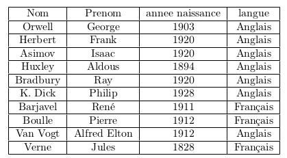

Bien observer le schéma relationnel de la base avant de vous lancer dans ces questions.
Cette base de données concerne des livres et des écrivains.
Vous serez guidés dans ce TP pour découvrir la syntaxe du langage SQL.
SELECT * FROM Langue;pour visualiser le contenu de la relation Langue.
N'oubliez pas le point-virgule à la fin !
INSERT INTO Langue VALUES (1, "Anglais"), (2, "Français");
Sur le même modèle, ajouter les langues Espagnol et Allemand.
INSERT INTO Langue VALUES (3, "Espagnol"), (4, "Allemand");
INSERT INTO Langue VALUES (2, "Turc");Expliquer le message d'erreur.
La clef primaire 2 existe déjà (pour le Français) : impossible d'avoir 2 clefs primaires identiques...
Compléter la table Auteur afin que celle-ci reflète les informations suivantes (penser à
revoir le schéma de la table) :

INSERT INTO Auteur VALUES
(8, "Boulle", "Pierre", 2, 1912),
(9, "Van Vogt", "Alfred Elton", 1, 1912),
(10, "Verne", "Jules", 2, 1828)
;
Ajouter les 3 livres manquants à la table Livre: "La planète des singes", "Le monde des A" et "De la Terre à la Lune". (les informations nécessaires sont résumées dans le tableau présenté en début de TP)
Aurait-on pu créer ces livres avant d’avoir complété la table Auteur ? Justifier.
INSERT INTO Livre VALUES
(14, "La planète des singes", 8, 1963),
(15, "Le monde des A", 9, 1945),
(16, "De la Terre à la Lune", 10, 1865)
;
On ne pouvait pas créer ces livres avant d'avoir complété la relation Auteur car sinon nous n'aurions pas su quelle valeur de clef étrangère donner aux auteurs.
Afficher le contenu de la table Theme avec une requête SELECT.
SELECT * FROM Theme;
Trouver le thème qui a été oublié, et l’ajouter à la table.
INSERT INTO Theme VALUES (10, "Intelligence artificielle");
Observer le schéma de la table RelationLivreTheme et afficher son contenu avec une requête SELECT.
SELECT * FROM RelationLivreTheme;
Ajouter à cette table les enregistrements nécessaires pour que les Livres qui font référence au thème "Intelligence artificielle" soient correctement pris en compte.
INSERT INTO RelationLivreTheme VALUES
(9, 10),
(10, 10),
(15, 10)
;
Enfin, ajouter à cette table les enregistrements décrivant les thèmes des 3 livres ajoutés plus tôt.
INSERT INTO RelationLivreTheme VALUES
(14, 1),
(14, 4),
(15, 1),
(16, 1),
(16, 9)
;
Vérifier que les livres sont bien associés aux bons thèmes en recopiant la commande suivante (explications de cette requête plus tard...) :
SELECT Titre, Intitule FROM RelationLivreTheme
JOIN Livre ON Livre.IdLivre = RelationLivreTheme.IdLivre
JOIN Theme ON Theme.IdTheme = RelationLivreTheme.IdTheme;
Vérifier les autres informations sur les livres en recopiant la commande suivante (explications de cette requête plus tard...) :
SELECT DISTINCT
Titre, NomAuteur, PrenomAuteur, AnneeNaissance, Langue, AnneePubli
FROM RelationLivreTheme
JOIN Livre ON Livre.IdLivre = RelationLivreTheme.IdLivre
JOIN Auteur ON Auteur.IdAuteur = Livre.IdAuteur
JOIN Langue ON Langue.IdLangue = Auteur.IdLangue;